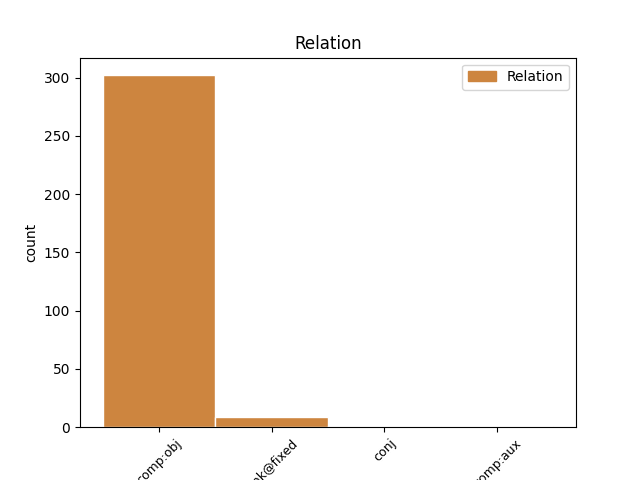
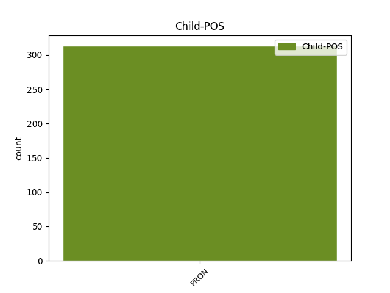

Distribution of features within this leaf


Agreement Rules sorted by frequency.
- When the dependent token is the direct object complements(comp:obj) of the head token, and the head token is ADP and the dependent token is PRON.
1 Jedino _ _ _ _ 0 _ _ _
2 mi _ _ _ _ 0 _ _ _
3 se _ _ _ _ 0 _ _ _
4 činilo _ _ _ _ 0 _ _ _
5 da _ _ _ _ 0 _ _ _
6 je _ _ _ _ 0 _ _ _
7 u u ADP Sl Case=Loc 0 _ _ _
8 njima oni PRON Pp3-pl Case=Loc|Number=Plur|Person=3|PronType=Prs 7 comp:obj _ _
9 puno _ _ _ _ 0 _ _ _
10 više _ _ _ _ 0 _ _ _
11 tuge _ _ _ _ 0 _ _ _
12 nego _ _ _ _ 0 _ _ _
13 kada _ _ _ _ 0 _ _ _
14 je _ _ _ _ 0 _ _ _
15 bila _ _ _ _ 0 _ _ _
16 djevojčica _ _ _ _ 0 _ _ _
17 . _ _ _ _ 0 _ _ _
1 Izabranici _ _ _ _ 0 _ _ _
2 Dinka _ _ _ _ 0 _ _ _
3 Jeličića _ _ _ _ 0 _ _ _
4 su _ _ _ _ 0 _ _ _
5 dominirali _ _ _ _ 0 _ _ _
6 protiv _ _ _ _ 0 _ _ _
7 slabašnih _ _ _ _ 0 _ _ _
8 , _ _ _ _ 0 _ _ _
9 ali _ _ _ _ 0 _ _ _
10 žilavih _ _ _ _ 0 _ _ _
11 Luksemburžana _ _ _ _ 0 _ _ _
12 , _ _ _ _ 0 _ _ _
13 pri pri ADP Sl Case=Loc 0 _ _ _
14 čemu što PRON Pi3n-l Case=Loc|Gender=Neut|PronType=Int,Rel 13 unk@fixed _ _
15 je _ _ _ _ 0 _ _ _
16 bilo _ _ _ _ 0 _ _ _
17 vidljivo _ _ _ _ 0 _ _ _
18 dosta _ _ _ _ 0 _ _ _
19 konfuzije _ _ _ _ 0 _ _ _
20 i _ _ _ _ 0 _ _ _
21 nedorečenosti _ _ _ _ 0 _ _ _
22 u _ _ _ _ 0 _ _ _
23 igri _ _ _ _ 0 _ _ _
24 . _ _ _ _ 0 _ _ _
1 Time _ _ _ _ 0 _ _ _
2 bi _ _ _ _ 0 _ _ _
3 se _ _ _ _ 0 _ _ _
4 pripremio _ _ _ _ 0 _ _ _
5 teren _ _ _ _ 0 _ _ _
6 za _ _ _ _ 0 _ _ _
7 izvanredne _ _ _ _ 0 _ _ _
8 izbore _ _ _ _ 0 _ _ _
9 ove _ _ _ _ 0 _ _ _
10 jeseni _ _ _ _ 0 _ _ _
11 -- _ _ _ _ 0 _ _ _
12 što _ _ _ _ 0 _ _ _
13 je _ _ _ _ 0 _ _ _
14 nešto _ _ _ _ 0 _ _ _
15 za za ADP Sa Case=Acc 0 _ _ _
16 što što PRON Pi3n-a Case=Acc|Gender=Neut|PronType=Int,Rel 15 comp:aux _ _
17 se _ _ _ _ 0 _ _ _
18 predsjednik _ _ _ _ 0 _ _ _
19 Traian _ _ _ _ 0 _ _ _
20 Basescu _ _ _ _ 0 _ _ _
21 zalagao _ _ _ _ 0 _ _ _
22 još _ _ _ _ 0 _ _ _
23 od _ _ _ _ 0 _ _ _
24 prosinca _ _ _ _ 0 _ _ _
25 . _ _ _ _ 0 _ _ _
1 Veselilo _ _ _ _ 0 _ _ _
2 me _ _ _ _ 0 _ _ _
3 uzeti _ _ _ _ 0 _ _ _
4 u _ _ _ _ 0 _ _ _
5 ruke _ _ _ _ 0 _ _ _
6 svaki _ _ _ _ 0 _ _ _
7 svježe _ _ _ _ 0 _ _ _
8 otisnuti _ _ _ _ 0 _ _ _
9 primjerak _ _ _ _ 0 _ _ _
10 kao _ _ _ _ 0 _ _ _
11 što _ _ _ _ 0 _ _ _
12 su _ _ _ _ 0 _ _ _
13 me _ _ _ _ 0 _ _ _
14 privlačili _ _ _ _ 0 _ _ _
15 i _ _ _ _ 0 _ _ _
16 ti _ _ _ _ 0 _ _ _
17 sastanci _ _ _ _ 0 _ _ _
18 na _ _ _ _ 0 _ _ _
19 kojima _ _ _ _ 0 _ _ _
20 se _ _ _ _ 0 _ _ _
21 ubrzano _ _ _ _ 0 _ _ _
22 učilo _ _ _ _ 0 _ _ _
23 o o ADP Sl Case=Loc 0 _ _ _
24 svemu _ _ _ _ 0 _ _ _
25 i _ _ _ _ 0 _ _ _
26 svačemu svašta PRON Pi3n-l Case=Loc|Gender=Neut|PronType=Tot 23 conj _ SpaceAfter=No
27 , _ _ _ _ 0 _ _ _
28 pri _ _ _ _ 0 _ _ _
29 čemu _ _ _ _ 0 _ _ _
30 je _ _ _ _ 0 _ _ _
31 svatko _ _ _ _ 0 _ _ _
32 bio _ _ _ _ 0 _ _ _
33 i _ _ _ _ 0 _ _ _
34 poučavatelj _ _ _ _ 0 _ _ _
35 i _ _ _ _ 0 _ _ _
36 učenik _ _ _ _ 0 _ _ _
37 , _ _ _ _ 0 _ _ _
38 a _ _ _ _ 0 _ _ _
39 u _ _ _ _ 0 _ _ _
40 redakciji _ _ _ _ 0 _ _ _
41 je _ _ _ _ 0 _ _ _
42 u _ _ _ _ 0 _ _ _
43 svako _ _ _ _ 0 _ _ _
44 vrijeme _ _ _ _ 0 _ _ _
45 tekla _ _ _ _ 0 _ _ _
46 neka _ _ _ _ 0 _ _ _
47 zanimljiva _ _ _ _ 0 _ _ _
48 diskusija _ _ _ _ 0 _ _ _
49 u _ _ _ _ 0 _ _ _
50 koju _ _ _ _ 0 _ _ _
51 se _ _ _ _ 0 _ _ _
52 moglo _ _ _ _ 0 _ _ _
53 uključiti _ _ _ _ 0 _ _ _
54 ili _ _ _ _ 0 _ _ _
55 je _ _ _ _ 0 _ _ _
56 samo _ _ _ _ 0 _ _ _
57 pratiti _ _ _ _ 0 _ _ _
58 , _ _ _ _ 0 _ _ _
59 pri _ _ _ _ 0 _ _ _
60 čemu _ _ _ _ 0 _ _ _
61 smo _ _ _ _ 0 _ _ _
62 se _ _ _ _ 0 _ _ _
63 svi _ _ _ _ 0 _ _ _
64 odlično _ _ _ _ 0 _ _ _
65 zabavljali _ _ _ _ 0 _ _ _
66 . _ _ _ _ 0 _ _ _
Disagree Examples:
1 Spremanje _ _ _ _ 0 _ _ _
2 se _ _ _ _ 0 _ _ _
3 ne _ _ _ _ 0 _ _ _
4 odvija _ _ _ _ 0 _ _ _
5 na _ _ _ _ 0 _ _ _
6 samo _ _ _ _ 0 _ _ _
7 jednom _ _ _ _ 0 _ _ _
8 čvoru _ _ _ _ 0 _ _ _
9 nego _ _ _ _ 0 _ _ _
10 na na ADP Sa Case=Acc 0 _ _ _
11 više _ _ _ _ 0 _ _ _
12 njih oni PRON Pp3-pg Case=Gen|Number=Plur|Person=3|PronType=Prs 10 comp:obj _ SpaceAfter=No
13 , _ _ _ _ 0 _ _ _
14 i _ _ _ _ 0 _ _ _
15 operacija _ _ _ _ 0 _ _ _
16 spremanja _ _ _ _ 0 _ _ _
17 smatra _ _ _ _ 0 _ _ _
18 se _ _ _ _ 0 _ _ _
19 uspješnom _ _ _ _ 0 _ _ _
20 ako _ _ _ _ 0 _ _ _
21 je _ _ _ _ 0 _ _ _
22 podatak _ _ _ _ 0 _ _ _
23 dobro _ _ _ _ 0 _ _ _
24 spremljen _ _ _ _ 0 _ _ _
25 na _ _ _ _ 0 _ _ _
26 nekolicini _ _ _ _ 0 _ _ _
27 mogućih _ _ _ _ 0 _ _ _
28 čvorova _ _ _ _ 0 _ _ _
29 . _ _ _ _ 0 _ _ _
1 Na na ADP Sl Case=Loc 0 _ _ _
2 vama vi PRON Pp2-pd Case=Dat|Number=Plur|Person=2|PronType=Prs 1 comp:obj _ _
3 je _ _ _ _ 0 _ _ _
4 potom _ _ _ _ 0 _ _ _
5 odluka _ _ _ _ 0 _ _ _
6 što _ _ _ _ 0 _ _ _
7 ćete _ _ _ _ 0 _ _ _
8 s _ _ _ _ 0 _ _ _
9 njima _ _ _ _ 0 _ _ _
10 . _ _ _ _ 0 _ _ _
1 Tko _ _ _ _ 0 _ _ _
2 god _ _ _ _ 0 _ _ _
3 je _ _ _ _ 0 _ _ _
4 jednom _ _ _ _ 0 _ _ _
5 imao _ _ _ _ 0 _ _ _
6 BlackBerry _ _ _ _ 0 _ _ _
7 , _ _ _ _ 0 _ _ _
8 brzo _ _ _ _ 0 _ _ _
9 je _ _ _ _ 0 _ _ _
10 stekao _ _ _ _ 0 _ _ _
11 ovisnost _ _ _ _ 0 _ _ _
12 o _ _ _ _ 0 _ _ _
13 tom _ _ _ _ 0 _ _ _
14 uređaju _ _ _ _ 0 _ _ _
15 jer _ _ _ _ 0 _ _ _
16 on _ _ _ _ 0 _ _ _
17 donosi _ _ _ _ 0 _ _ _
18 nevjerojatnu _ _ _ _ 0 _ _ _
19 eleganciju _ _ _ _ 0 _ _ _
20 i _ _ _ _ 0 _ _ _
21 jednostavnost _ _ _ _ 0 _ _ _
22 u _ _ _ _ 0 _ _ _
23 instantnom _ _ _ _ 0 _ _ _
24 razmjenjivanju _ _ _ _ 0 _ _ _
25 e-mailova _ _ _ _ 0 _ _ _
26 bez _ _ _ _ 0 _ _ _
27 obzira _ _ _ _ 0 _ _ _
28 na _ _ _ _ 0 _ _ _
29 to _ _ _ _ 0 _ _ _
30 koliko _ _ _ _ 0 _ _ _
31 accounta _ _ _ _ 0 _ _ _
32 imate _ _ _ _ 0 _ _ _
33 i _ _ _ _ 0 _ _ _
34 na _ _ _ _ 0 _ _ _
35 kojim _ _ _ _ 0 _ _ _
36 tipovima _ _ _ _ 0 _ _ _
37 servera _ _ _ _ 0 _ _ _
38 , _ _ _ _ 0 _ _ _
39 a _ _ _ _ 0 _ _ _
40 uz _ _ _ _ 0 _ _ _
41 to _ _ _ _ 0 _ _ _
42 je _ _ _ _ 0 _ _ _
43 i _ _ _ _ 0 _ _ _
44 jedini _ _ _ _ 0 _ _ _
45 mobilni _ _ _ _ 0 _ _ _
46 uređaj _ _ _ _ 0 _ _ _
47 u u ADP Sl Case=Loc 0 _ _ _
48 nas mi PRON Pp1-pg Case=Gen|Number=Plur|Person=1|PronType=Prs 47 comp:obj _ ToDo=nmod
49 koji _ _ _ _ 0 _ _ _
50 se _ _ _ _ 0 _ _ _
51 može _ _ _ _ 0 _ _ _
52 nabaviti _ _ _ _ 0 _ _ _
53 s _ _ _ _ 0 _ _ _
54 potpunom _ _ _ _ 0 _ _ _
55 flat _ _ _ _ 0 _ _ _
56 - _ _ _ _ 0 _ _ _
57 tarifom _ _ _ _ 0 _ _ _
58 za _ _ _ _ 0 _ _ _
59 mobilni _ _ _ _ 0 _ _ _
60 pristup _ _ _ _ 0 _ _ _
61 Internetu _ _ _ _ 0 _ _ _
62 . _ _ _ _ 0 _ _ _
1 Talijani _ _ _ _ 0 _ _ _
2 su _ _ _ _ 0 _ _ _
3 se _ _ _ _ 0 _ _ _
4 iz _ _ _ _ 0 _ _ _
5 svakog _ _ _ _ 0 _ _ _
6 drugog _ _ _ _ 0 _ _ _
7 Ferrarija _ _ _ _ 0 _ _ _
8 , _ _ _ _ 0 _ _ _
9 Maseratija _ _ _ _ 0 _ _ _
10 , _ _ _ _ 0 _ _ _
11 Lamborghinija _ _ _ _ 0 _ _ _
12 ili _ _ _ _ 0 _ _ _
13 Bugattija _ _ _ _ 0 _ _ _
14 okretali _ _ _ _ 0 _ _ _
15 za za ADP Sa Case=Acc 0 _ _ _
16 njom on PRON Pp3fsi Case=Ins|Gender=Fem|Number=Sing|Person=3|PronType=Prs 15 comp:obj _ SpaceAfter=No
17 . _ _ _ _ 0 _ _ _
1 Nemamo _ _ _ _ 0 _ _ _
2 prepoznatljivu _ _ _ _ 0 _ _ _
3 estetiku _ _ _ _ 0 _ _ _
4 zbog _ _ _ _ 0 _ _ _
5 dva _ _ _ _ 0 _ _ _
6 razloga _ _ _ _ 0 _ _ _
7 : _ _ _ _ 0 _ _ _
8 svaki _ _ _ _ 0 _ _ _
9 rad _ _ _ _ 0 _ _ _
10 želimo _ _ _ _ 0 _ _ _
11 prilagoditi _ _ _ _ 0 _ _ _
12 određenom _ _ _ _ 0 _ _ _
13 projektu _ _ _ _ 0 _ _ _
14 , _ _ _ _ 0 _ _ _
15 a _ _ _ _ 0 _ _ _
16 osim _ _ _ _ 0 _ _ _
17 toga _ _ _ _ 0 _ _ _
18 kod kod ADP Sg Case=Gen 0 _ _ _
19 nas mi PRON Pp1-pa Case=Acc|Number=Plur|Person=1|PronType=Prs 18 comp:obj _ _
20 u _ _ _ _ 0 _ _ _
21 agenciji _ _ _ _ 0 _ _ _
22 radi _ _ _ _ 0 _ _ _
23 60 _ _ _ _ 0 _ _ _
24 ljudi _ _ _ _ 0 _ _ _
25 kojima _ _ _ _ 0 _ _ _
26 dopuštamo _ _ _ _ 0 _ _ _
27 razvijanje _ _ _ _ 0 _ _ _
28 kreativnosti _ _ _ _ 0 _ _ _
29 , _ _ _ _ 0 _ _ _
30 rekao _ _ _ _ 0 _ _ _
31 je _ _ _ _ 0 _ _ _
32 Davor _ _ _ _ 0 _ _ _
33 Bruketa _ _ _ _ 0 _ _ _
34 , _ _ _ _ 0 _ _ _
35 koji _ _ _ _ 0 _ _ _
36 je _ _ _ _ 0 _ _ _
37 zajedno _ _ _ _ 0 _ _ _
38 s _ _ _ _ 0 _ _ _
39 Nikolom _ _ _ _ 0 _ _ _
40 Žinićem _ _ _ _ 0 _ _ _
41 prije _ _ _ _ 0 _ _ _
42 gotovo _ _ _ _ 0 _ _ _
43 12 _ _ _ _ 0 _ _ _
44 godina _ _ _ _ 0 _ _ _
45 osnovao _ _ _ _ 0 _ _ _
46 reklamnu _ _ _ _ 0 _ _ _
47 agenciju _ _ _ _ 0 _ _ _
48 Bruketa _ _ _ _ 0 _ _ _
49 & _ _ _ _ 0 _ _ _
50 Žinić _ _ _ _ 0 _ _ _
51 . _ _ _ _ 0 _ _ _